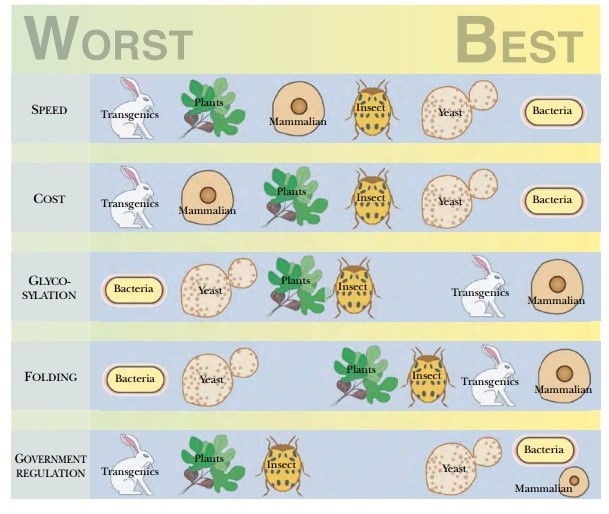
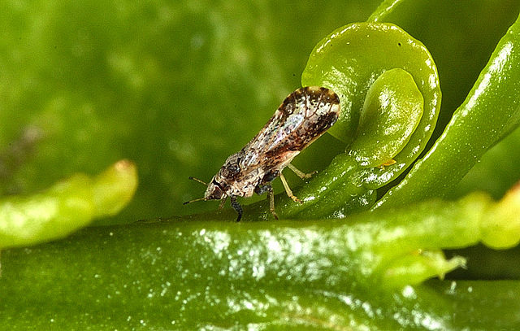
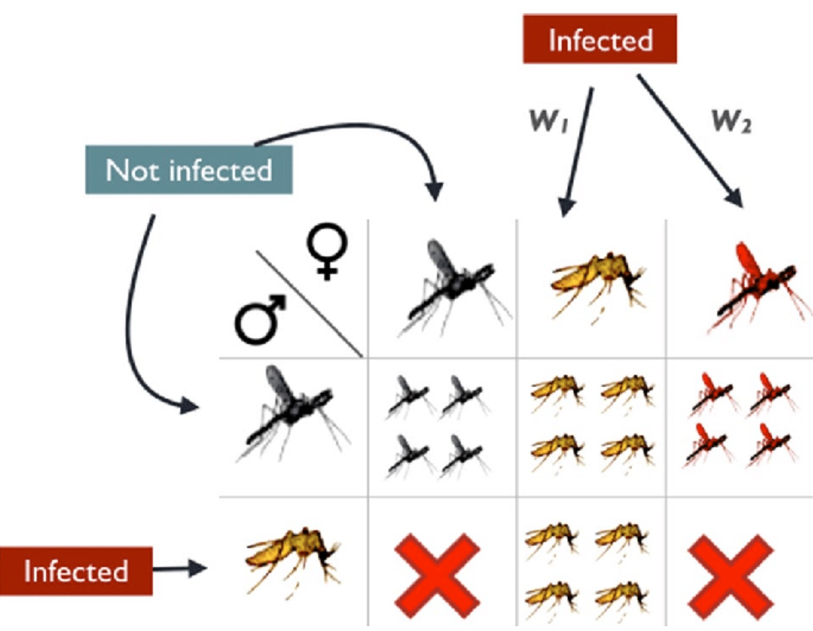

I am currently halfway through my Masters of Microbiology & Immunology. My goal is to apply my previous decade of experience as a data scientist and AI researcher to immunology. Even though my primary interest is on long-term impacts of viruses on humans, I wanted a broader and deeper understanding of microbiology in general. This past semester, I was pleasantly surprised to learn several fascinating facts about insects!
Insects are useful for making medications and vaccines
Proteins are a key component of many vaccines and medications. To create these proteins, scientists have come up with a range of protein expression systems. Bacteria, yeast, mammalian cells, and genetically modified animals can all be used to produce proteins for medications. And so can insects! For instance, baculovirus is a virus that mostly infects insects, and its genome can be modified to produce various cytokines (chemical messengers), antivirals (such as type 1 interferons), and vaccine components.
There are trade-offs with any choice of protein expression system. For example, bacteria are fast and cheap to use, but because they are quite dissimilar to humans, they are much worse for key steps such as protein folding or adding sugars to proteins (a process called glycosylation). And while mammalian cells or genetically modified animals will produce much more accurately folded proteins and glycosylation, they are expensive and slow for production. Baculoviruses from insects aren’t the worst in any of these categories, which makes them a widely useful workhorse for protein expression.
Insect cells are more similar to human cells than yeast or bacteria are, which means that the proteins they produce (when infected with modified baculoviruses) are more likely to be folded correctly, and they make for cheaper and faster expression systems than mammalian cells do. A baculovirus expression system is used, for example, to produce Novavax, a popular protein-based covid vaccine (which may have fewer side-effects than mRNA-based covid vaccines such as Pfizer and Moderna).

Insects really need the bacteria in their guts
While some bacteria are harmful to insects, other bacteria are not only beneficial, but even essential. A diet consisting only of sap is not nutritionally complete. Neither is a diet just of blood. Some arthropods can’t produce all the vitamins they need, and instead rely on bacteria in their guts to help synthesize essential vitamins. These bacteria (known as obligate symbionts) rely on their hosts as well, in a mutually beneficial relationship. Bioinformatics and modern gene sequencing has revolutionized the study of these obligate symbionts by allowing for their genomes to be sequenced and studied. One paper calls them the “The Tiniest Tiny Genomes”, and describes how through a long process of coevolution the bacteria lost the genes to manufacture cell membrane components. They are completely reliant on their hosts, while also producing B vitamins and essential amino acids.
While many types of bacteria help bugs synthesize nutrients, other types can help synthesize protective toxins to be used against predators. Diaphorina is an insect pest of citrus plants. Profftella, one of the bacterial obligate symbionts in its gut, is noteworthy for helping to synthesize both vitamins and protective toxins for its host, whereas many symbionts provide either vitamins or toxins, but not both.

A common bacteria in insects reduces risk of Dengue Virus to humans
An astonishing 60% of insects (including butterflies, bees, and beetles) around the world have the bacteria Wolbachia. This fascinating bacteria can have some surprising impacts, including reducing the ability of mosquitoes to carry or transmit dengue virus.
A. aegypti mosquitoes are carriers of dengue virus. They do not naturally carry Wolbachia, but when mosquitoes with Wolbachia were released in North Queensland, Australia, predicted transmission of dengue infections dropped by 95% over the following 2 years. A randomized study in Indonesia released Wolbachia-infected mosquitoes in some regions but not others, and found the regions with the Wolbachia-infected mosquitoes had 77% fewer dengue cases.
Another surprising effect of the bacteria is that a male mosquito with Wolbachia mates with a female mosquito that doesn’t have it, the fertilized eggs will not be viable. And two mosquitoes with different strains of Wolbachia can not produce viable eggs. Isn’t this weird??? This has been used in some efforts to reduce mosquito populations.

I look forward to reading your responses. Create a free GitHub account to comment below.